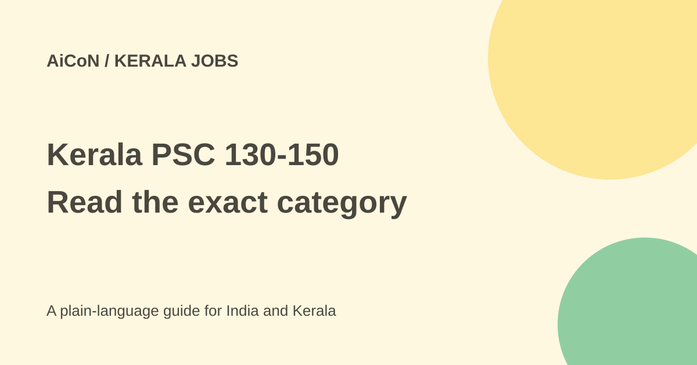

Kerala PSC 130-150/2026: deadline and eligibility guide
This archive guide covers the 31 August 2026 Kerala PSC gazette. Its deadline is 7 October 2026, not an ongoing application window. Check the official notification and any later notice before applying.

Which notification is this?
The official 31 August 2026 Extraordinary Gazette page lists category numbers 130/2026 to 150/2026. That is 21 category numbers, not a promise of 21 open-to-everyone job types or 21 individual vacancies. Several notifications combine category numbers for different reserved communities.
The original AiCoN post called this the latest gazette. A newer official gazette dated 30 September 2026 lists categories 151/2026 to 161/2026 with a separate 4 November 2026 deadline. Do not mix the two groups' dates or eligibility rules.
What is the application deadline?
The August gazette page lists 7 October 2026. The Artist notification explicitly says Wednesday, 7 October 2026, up to 12 midnight. This is a fixed historical date. Once that deadline passes, this guide must not be read as an invitation to apply unless an official extension or new notification says otherwise.
The guide was checked on 7 October 2026. It is not a guarantee that the portal will accept a particular candidate's submission or that no later official update exists. Check the exact category's PDF and the current official portal before relying on a deadline.
Artist: category 130/2026
The notification is for Artist in Information and Public Relations, with anticipated vacancies and a pay scale of ₹35,600-75,400. Anticipated vacancies are not a fixed count of immediate appointments.
The listed qualification is a Diploma in Drawing and Painting, MGTE or KGTE, or an equivalent qualification. The age range is 19-43, with the stated birth-date range 2 January 1983 to 1 January 2007, both included, and applicable relaxation rules in the notification. A general college degree or interest in drawing alone is not the listed qualification. Read the equivalence rules and keep the relevant proof.
Beat Forest Officer is restricted NCA recruitment
The combined category 146-150/2026 PDF is a first NCA, district-wise notification. It accepts only the specified reservation communities. NCA notifications fill gaps for named communities; they are not general openings for every candidate.
The table lists category 146 for LC/AI in Wayanad; 147 for Muslim in Idukki; 148 for SC in Idukki and Wayanad; 149 for SIUC Nadar in Idukki; and 150 for SCCC in Idukki. Each district entry lists one vacancy. Applications from other communities are to be rejected under the notification.
It lists Plus Two or a recognised equivalent and a pay scale of ₹27,900-63,700. Age rules differ by community, and the notification includes physical measurements, efficiency and endurance tests, medical standards and other conditions. Plus Two alone does not establish eligibility. Read the complete PDF, including community and district restrictions, rather than applying from a headline.
How to apply through the official process
- Open the official Kerala PSC website and locate the exact category number.
- Read its PDF and the general conditions.
- Use the official One Time Registration route. Existing users apply through their profile.
- Check qualification, age, community, district, photograph and identity details before submission.
- Use the Apply Now control for the exact notification when it is available and you are eligible.
- Save the application copy from My Applications and watch official confirmation or document-upload messages.
Cost and mistakes to avoid
The checked Artist and Beat Forest Officer PDFs say no application fee is required. A paid browsing centre or optional assistance is different from an official application fee. Do not pay someone for guaranteed selection or give them your profile password.
The Artist PDF says a submitted application cannot be deleted or altered. Profile corrections after the application deadline do not change that application. It also explains that candidates must give exam confirmation if a written, OMR or online test is conducted; otherwise their applications can be rejected. Finishing registration is not the same as submitting a category application or confirming an exam.
What changed since the original AiCoN post?
This guide replaces the broad "latest" label with the dated gazette, adds the newer group's separate deadline and corrects the impression that Beat Forest Officer is open to all communities. It gives exact examples while leaving each category's full PDF as the deciding source.
Frequently asked questions
Can everyone apply for categories 146-150?
No. They are restricted NCA notifications.
Is One Time Registration enough?
No. Submit the correct application and complete later required steps.
Can I use the November deadline for this group?
No. That deadline belongs to the September gazette group.
Sources: August 31 gazette, categories 130-150 · Artist 130 official PDF · Beat Forest Officer 146-150 official PDF · September 30 gazette, categories 151-161. Checked 7 October 2026.